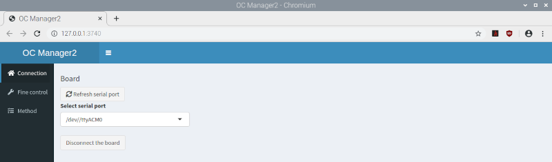

The next generation OCLab2 was accompagnied by new software, OC Manager2, completely restructured and newly written in R supported by Python.
To install the software, prepare a Raspberry Pi 4B (4 GB RAM) with Raspberry Pi OS with Desktop (https://www.raspberrypi.org/downloads)
Open the Raspberry-Pi configuration and select the tab 'Interfaces'.
Enable: Camera, SSH, VNC, I2C, Serial Port, Remote GPIO.
Select the tab 'Performance' and increase GPU Memory to 512 MB.
Click Okay and reboot.
You may run into problems, if date and time is not correctly synchronized, hindering the OS update and further installations.
In this case, activate the debian time server (uncomment the line) or select a proper time server working for you.
Therefore open the timesyncd.conf
sudo nano /etc/systemd/timesyncd.conf
[Time]
#NTP=
#FallbackNTP=0.debian.pool.ntp.org 1.debian.pool.ntp.org 2.debian.pool.ntp.org $
#FallbackNTP=[your time server]
followed by
sudo timedatectl set-ntp true
sudo reboot
Then wait until date and time is correctly synchronized, continuing with
sudo apt-get update
sudo apt-get upgrade
To install the OC_manager2 software, open a terminal on the Raspberry Pi (being in /home/pi) and run the following command:
git clone https://github.com/OfficeChromatography/oc_manager2.git
Open the file /home/pi/OC_manager2/sudo_bash.txt, copy the single line (for the desktop or lite version) and paste it into the terminal, for example:
sudo bash OC_manager2/oc_manager_install_desktop.sh |& tee oc-install.txt
followed by ENTER.
The install script will install all necessary libraries and software packages, followed by a reboot.
In case of problems, consult the logfile /home/pi/oc-install.txt,
and also consult the README_R_packages_versions file cloned with OC_manager2.
Alternatively, you can download an image (2.3 GB) of Raspberry Pi OS with Desktop together
with the OC_manager2 set-up, following
this link.
If you prefer to use the Raspberry OS lite (no desktop), you can find the respective image
(1.1 GB) here.
Using the ‘Raspberry Pi Imager‘ (https://www.raspberrypi.org/downloads), flash the image onto an SD card (>= 16 BG) and boot the Raspberry Pi.
User = pi; password = oc_lab2.
Open the Raspberry Pi configuration to select your settings in the 'Localisation' tab.
Perform an OS upgrade with
sudo apt-get update
sudo apt-get upgrade
and reboot.
It is recommended to set a static IP adress on the Raspberry Pi by running the following command in a terminal
sudo nano /etc/dhcpcd.conf
and filling out the following lines:
interface eth0 (or eth1 using the USB hub for LAN connection)
static ip_address=
static routers=
static domain_name_servers=
Save the changes with Ctrl+O, and close the file with Ctrl+X.
Then you can directly access the OC_manager2 through a browser from any PC/notebook in your network by typing the IP adress in the adress field.
Therefore, however, you have to enable a Crontab job, accessed by:
sudo crontab -e
Once in the editor, add this line, which will launch the application at reboot:
@reboot Rscript /home/pi/OC_manager2/app_exec.R
Save the changes with Ctrl+O, and leave the editor with Ctrl+X.
After reboot, the OC Manager2 will be available in the browser at http://127.0.0.1 (localhost), if the Crontab job was configured respectively.
Therefore, best configure the browser to start with the custom URL http://127.0.0.1
Being in a terminal at pi/home, type the following commands
cd OC_manager2
R
shiny::runApp()
On how to use the software, a pdf is available in the downloaded folder OC_manager2/Instructions.